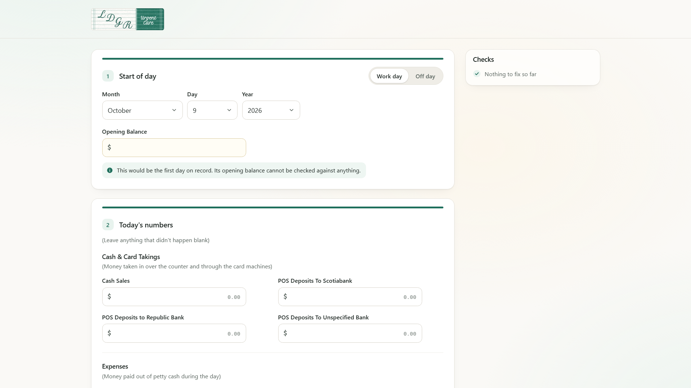
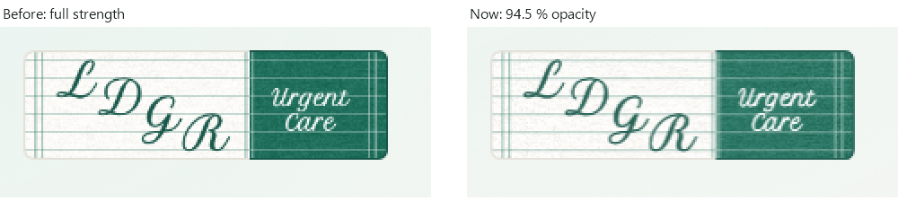
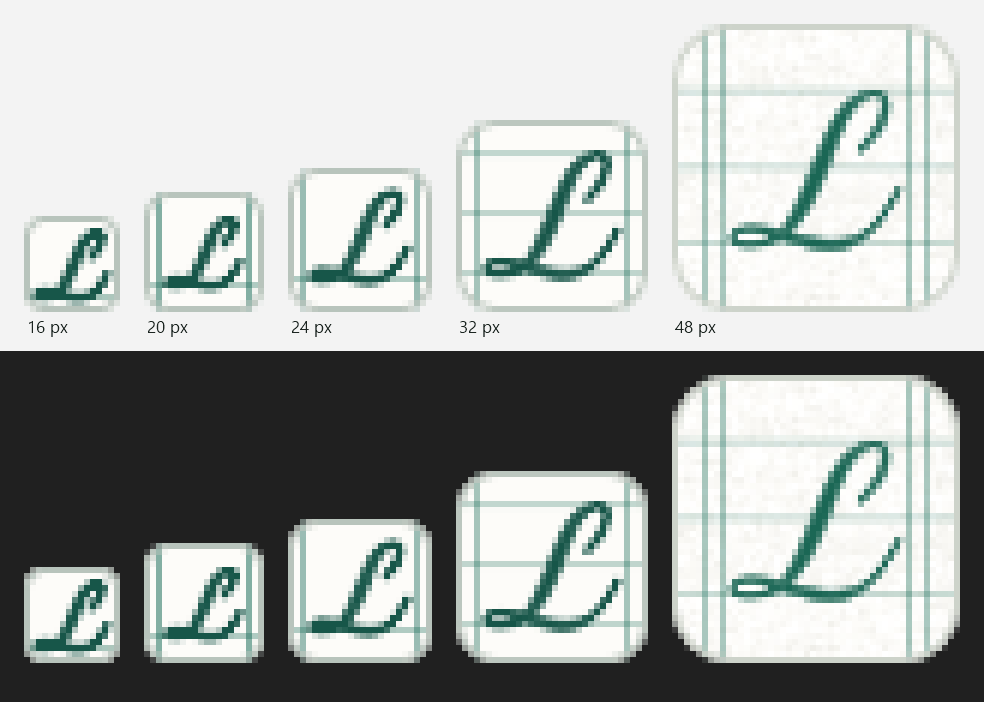
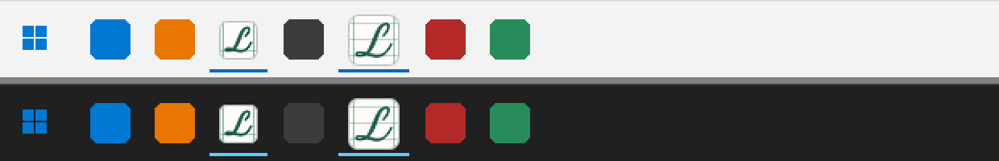

The launcher, the form header and the icon, as staff will see them
Four views to check. The form header is a capture of the real LDGR form, running from a scratch copy with the new image in place. The startup, closing and icon views are rendered stills of the finished art, at your 1536 × 864 window and 125 % Windows scaling.
1 · Startup screen
Shown from the moment LDGR is opened until the form is ready, usually about 3 seconds. A normal start shows only the banner.


- Check
- The banner sits a little above centre, at 42 % of the height.
- The paper reads as part of the app's cream page, with its soft card shadow.
- The rounded corners look soft, not sharp.
- The failure text is readable and does not crowd the banner.
2 · Closing screen
Shown for a few seconds while LDGR closes and hands over the daily report.

- Check
- The word is easy to read at a glance.
- Its size feels right for the screen.
3 · Form header
The strip replaces the green square, "LDGR" and "Urgent Care" at the top left of the form. Nothing else on the form changes.


- Check
- "LDGR" leads, and "Urgent Care" reads as the quieter caption.
- At 94.5 %, the contrast with the page feels right.
- The join is seamless, and the lines run straight across it.
4 · App icon
The icon on LDGR.exe, the taskbar and the desktop shortcut. You already approved this one; it is included for the full set.
The previous version of this page stretched these pictures to fill the column, which made them look blurry. They are now shown pixel for pixel, magnified with hard edges. The slight softness at the letter edges is the icon's own anti-aliasing, the same as every Windows icon has.

